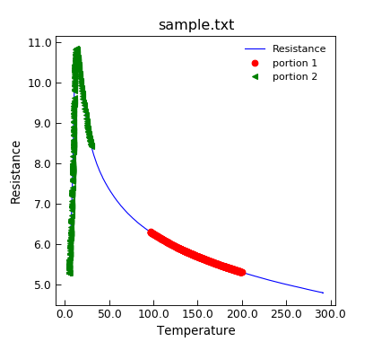

VSMFile.select¶
-
VSMFile.select(*args, **kargs)¶ Produce a copy of the DataFile with only data rows that match a criteria.
- Parameters
args (various) – A single positional argument if present is interpreted as follows:
* If a callable function is given, the entire row is presented to it. – If it evaluates True then that row is selected. This allows arbitary select operations
* If a dict is given, then it and the kargs dictionary are merged and used to select the rows
- Keyword Arguments
kargs (various) –
Arbitary keyword arguments are interpreted as requestion matches against the corresponding columns. The keyword argument may have an additional __operator* appended to it which is interpreted as follows:
eq value equals argument value (this is the default test for scalar argument)
ne value doe not equal argument value
gt value doe greater than argument value
lt value doe less than argument value
ge value doe greater than or equal to argument value
le value doe less than or equal to argument value
between value lies beween the minimum and maximum values of the arguement (the default test for 2-length tuple arguments)
ibetween,*ilbetween*,*iubetween* as above but include both,lower or upper values
- Returns
(DatFile) – a copy the DataFile instance that contains just the matching rows.
Note
if the operator is preceeded by __not__ then the sense of the test is negated.
If any of the tests is True, then the row will be selected, so the effect is a logical OR. To achieve a logical AND, you can chain two selects together:
d.select(temp__le=4.2,vti_temp__lt=4.2).select(field_gt=3.0)
will select rows that have either temp or vti_temp metadata values below 4.2 AND field metadata values greater than 3.
If you need to select on a row value that ends in an operator word, then append __eq in the keyword name to force the equality test. If the metadata keys to select on are not valid python identifiers, then pass them via the first positional dictionary value.
There is a “magic” column name “_i” which is interpreted as the row numbers of the data.
- Example
"""Example using select method to pick out data.""" from Stoner import Data d = Data("sample.txt", setas="xy") d.plot(fmt="b-") d.select(Temp__gt=75).select(Res__between=(5.3, 6.3)).plot( fmt="ro", label="portion 1" ) d.select(Temp__lt=30).plot(fmt="g<", label="portion 2")


{kind=link}
{kind=link}